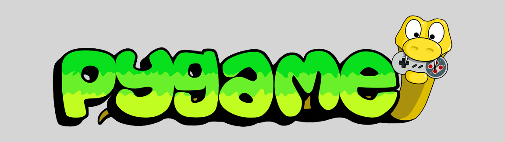

Ten Places Beginning Game Developers Struggle
1. Overly Ambitious Projects
Gamers are a passionate bunch. And game developers? Even moreso. But video games have been complex creations from day one. And while platforms like Godot, Löve2D, and Pygame have really made game development accessible, it's almost a double-edged sword. It can be easy bite off more than you can chew. Many beginners try to build their dream game (like an MMORPG or an open-world game) right away. It's much better to start small—like a Pong or Frogger clone—and gradually work your way up. That's the reason we started Retro Clones - as a way to help aspiring gamers build a strong foundation before tackline their dream indie project.
2. Poor Game Architecture
Beginners often write messy, unorganized code without thinking about maintainability. This is mostly because they just don't know any better either because of game development specific experience or because they aren't accustomed to working collaboratively on a team.
Some common architectural pitfalls include:
- Putting everything in one huge Game class or script.
- Not separating concerns (e.g., mixing game logic with rendering or input handling).
- Not using design patterns where they make sense (though overusing them can also be a mistake).
Speaking of game design patterns, you'll find we try to use them on retro game clones wherever we can to help illustrate their application and give inexperienced game developers a chance to see said patterns in action. Yes, in many cases, it overcomplicates things, but we stand by the value incorporating them into simple games offers.
3. Ignoring Game Loops and Performance Considerations
Performance optimization takes experience. That's a fact. Lacking such experience, beginneres can often find themselves reaching for bad solutions to common challenges.
A few common examples include:
- Use time.sleep() for delays, which pauses the entire game instead of controlling frame rate.
- Forget to optimize collision detection or object updates, leading to performance issues.
- Rely too much on polling instead of event-driven systems (e.g., checking key states every frame instead of using an event-based input system).
4. Bad Handling of Game State
Without proper state management, games can become chaotic. Common mistakes include:
- Using too many global variables.
- Not properly tracking when to switch between menus, gameplay, and game-over states.
- Not having a clear way to pause or reset the game.
5. Poor AI Design
AI that is too simple (always reacting instantly) or too hard (perfect, inhuman reflexes) is common. This is a tricky one because developing AI can be a very complex undertaking. For an inexperienced game developer, it's best to rely on some simple approaches to helping your AI seem less artificial:
6. Not Understanding Delta Time
Games should be frame rate independent, meaning movement should be based on delta time (dt) instead of relying on fixed step movements per frame. Otherwise, the game might run too fast or too slow depending on the hardware.
7. Reinventing the Wheel Unnecessarily
Most common libraries needed to build a game have already been created (physics, collision detection, sound management, image handling, etc.) and yet some beginning developers insist they "have a better way" or think, "how hard can it be?" Don't make that mistake. Game engines like Unity, or Unreal were designed and created by teams of developers with more experience in their left hand than the accumulated knowledge of one hundred beginning game developers. While it's great to learn by implementing things from scratch, there are enough challenges building even a simple game to keep you busy.
8. Not Playtesting or Tweaking Mechanics
This is less of an issue for the work we do at Retro Clones, it's hugely important for anyone rolling their own indie game. The last thing a game developer wants to do is pour a year of their life into build a game that isn't fun and nobody wants to play. Take the time to let friends play your game in its rawest format. Remember, the closer any game is to being finished, the more costly and difficult it is to make changes. Get and use feedback early and often.
9. Lack of Version Control
Many beginners don't use Git or any version control system. This makes it hard to recover lost work or track changes. Even for small projects, using GitHub or Git locally is a great habit.
10. Not Finishing Projects
Many beginner devs start a project, hit a roadblock, and abandon it. This is totally normal, but it's better to finish small projects rather than constantly chase new ideas. Even if a finished project isn't perfect, it teaches more than an unfinished one. Two pieces of advice here. First, start by building simple games like retro game clones. Second, discuss your game with AI.